Brigantium showstand
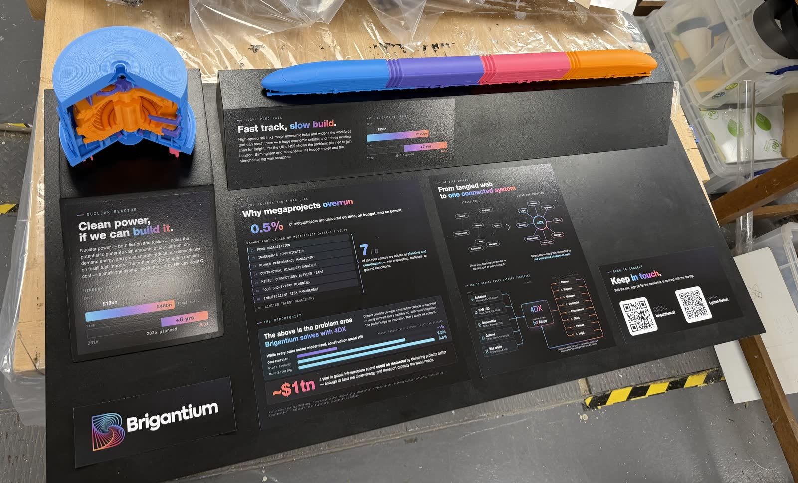
A physical stand built for the Cleantech Innovation showcase at Imperial, designed to explain the product to people encountering it cold.
One side carried the context: posters, a 3D-printed tokamak and high-speed-rail model, and an iPad running a photogrammetry scan. The other side was the demo — an arcade-machine-style computer with a custom control panel for navigating the 4DX app, plus an integrated speaker running an ElevenLabs voice narration that walked attendees through it unaided.
It drew a crowd. Attendees stayed and played, and the stand held the attention of visitors of every age, down to young children working the controls themselves.
“…successfully made a rather dry subject into something fun and interesting.”
— VISITING VC
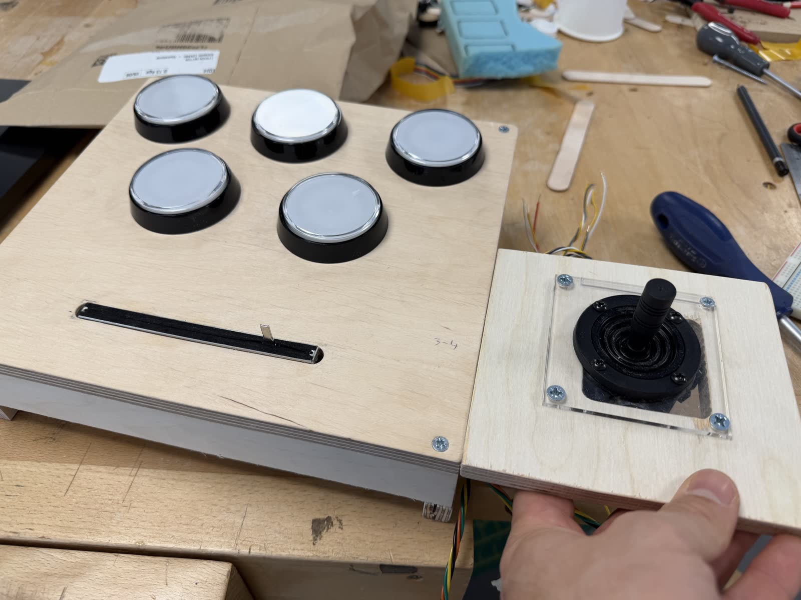
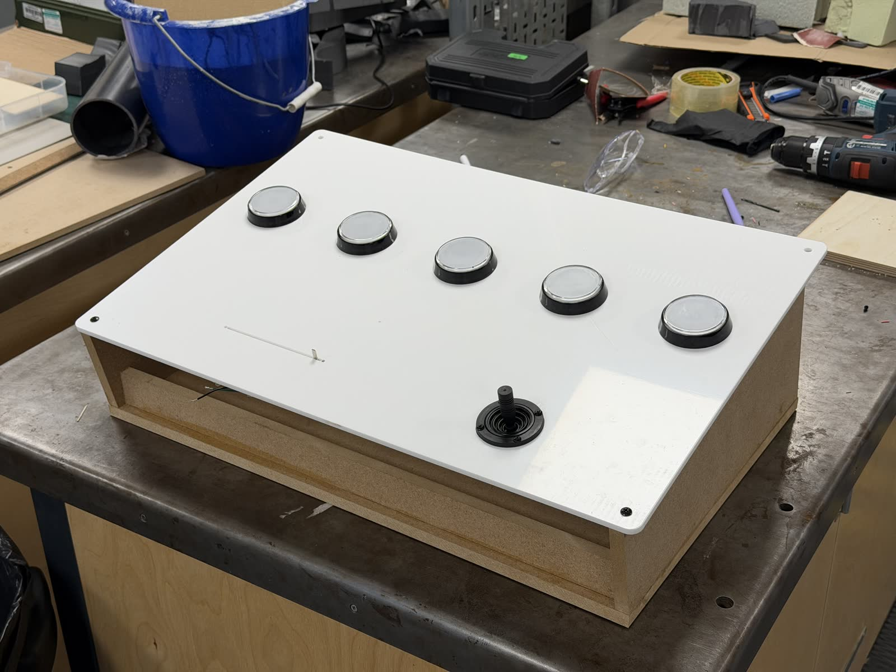
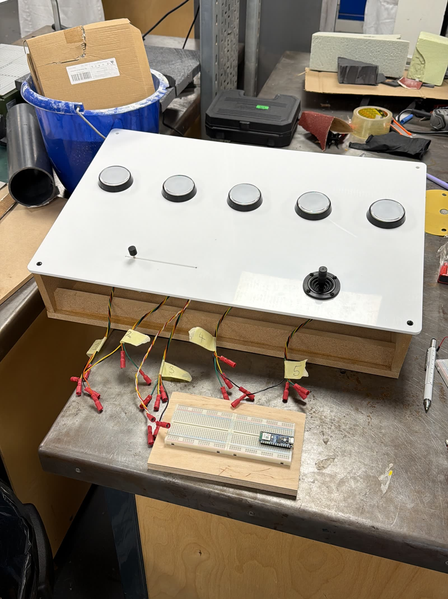
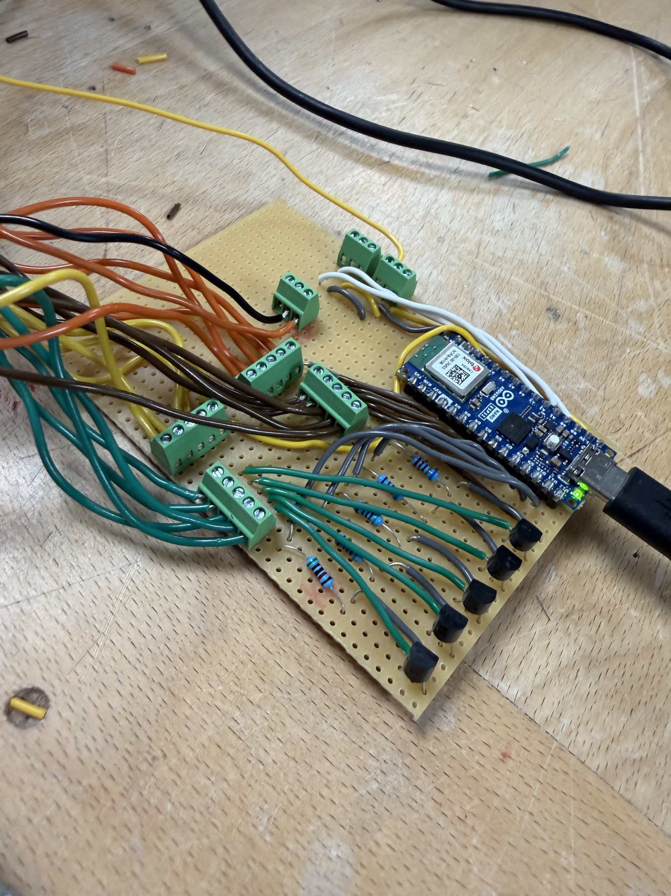
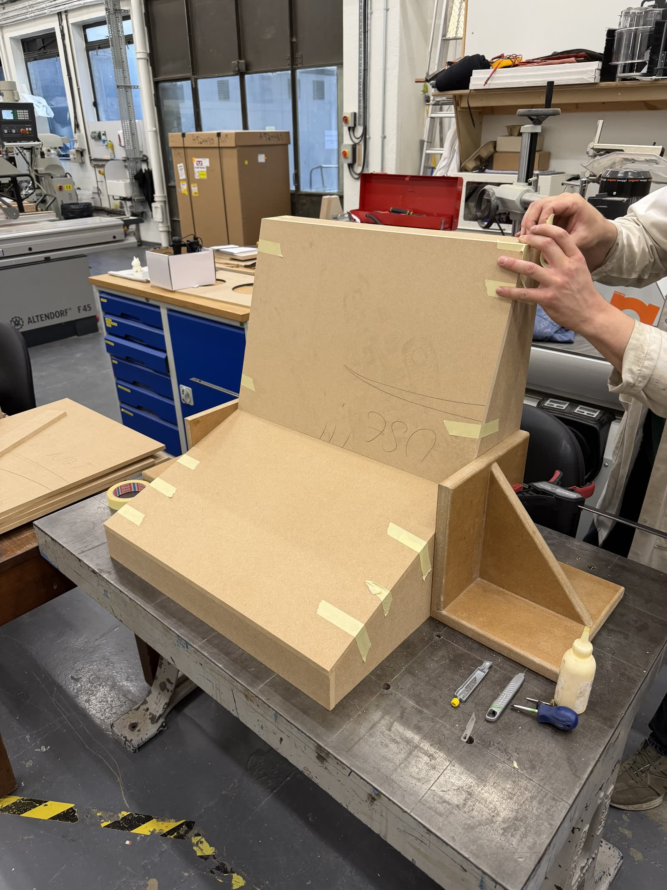
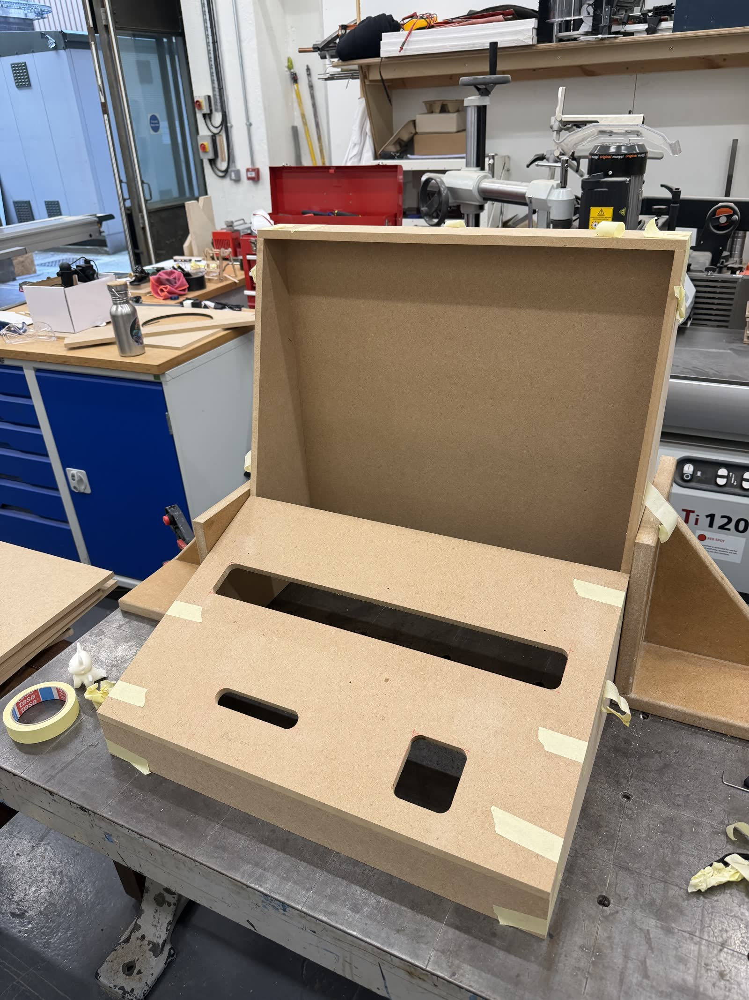
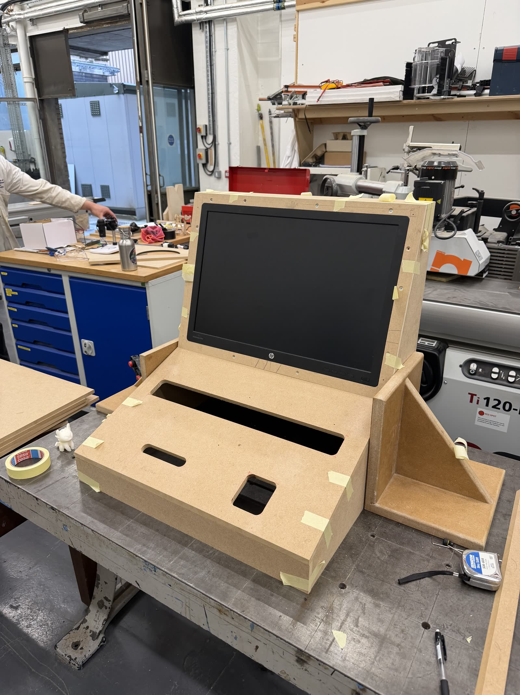
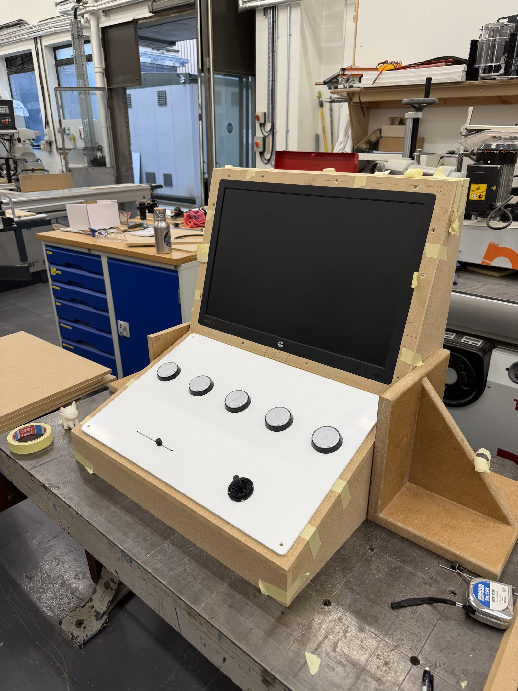
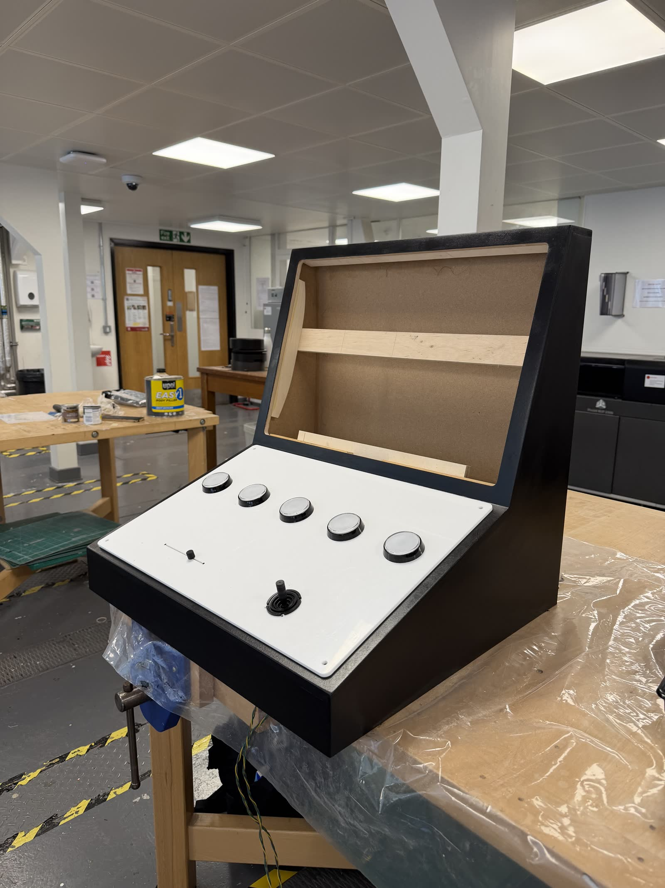
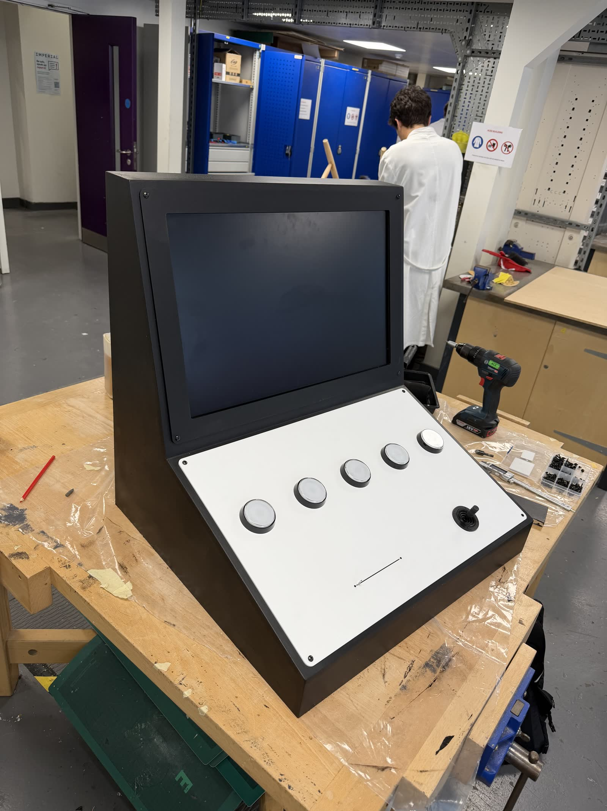
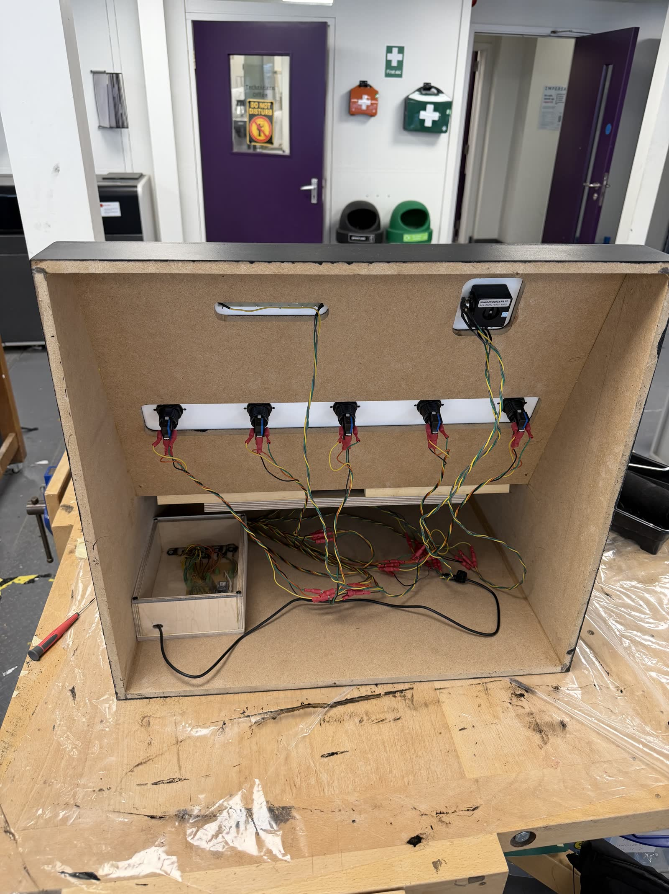
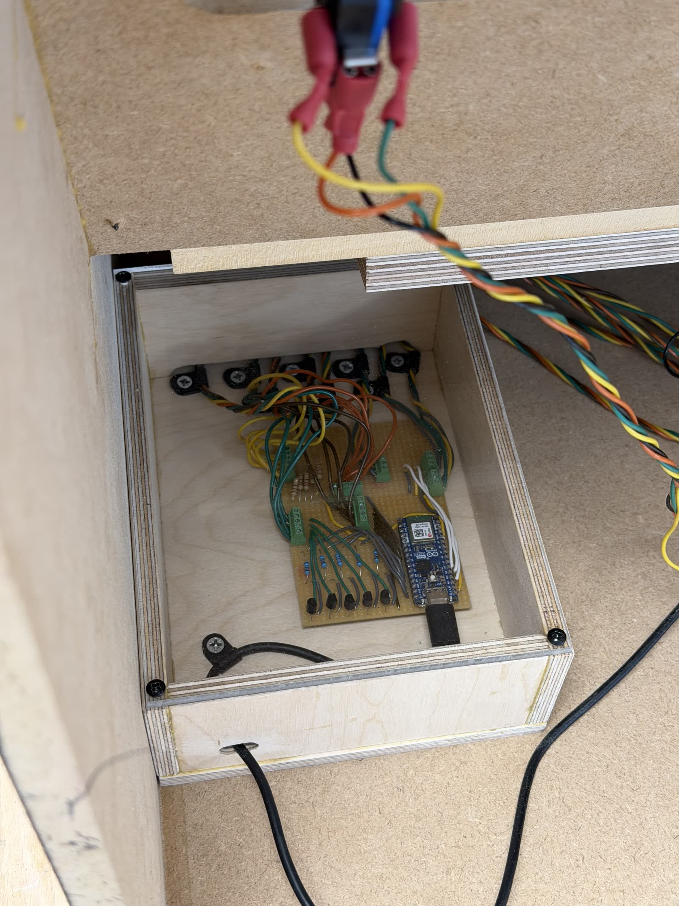
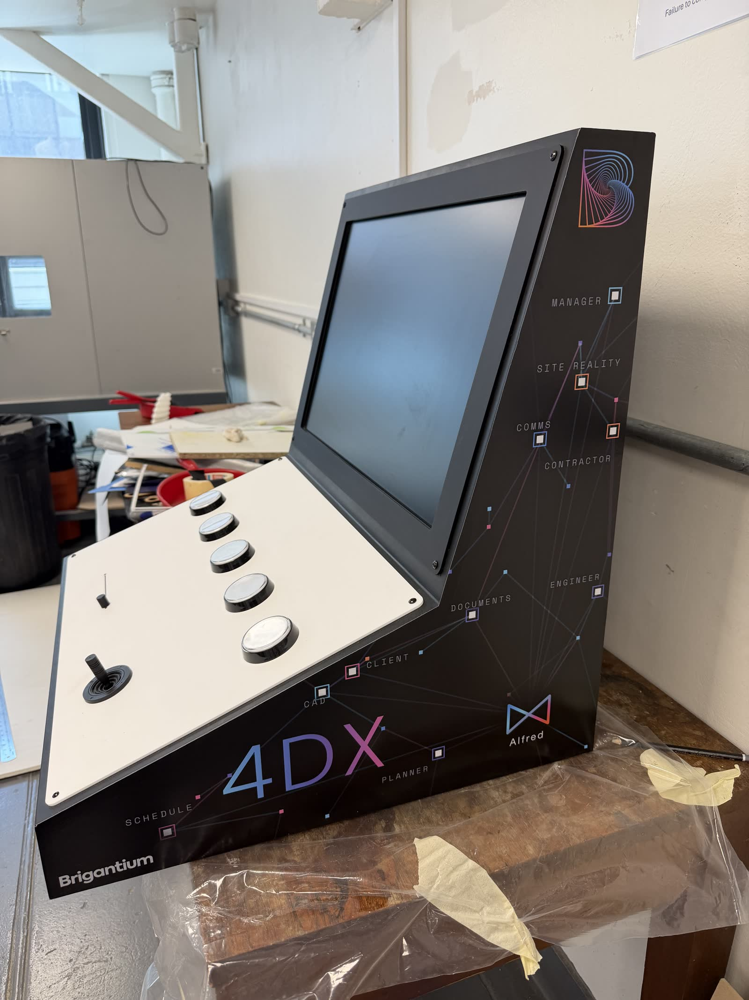